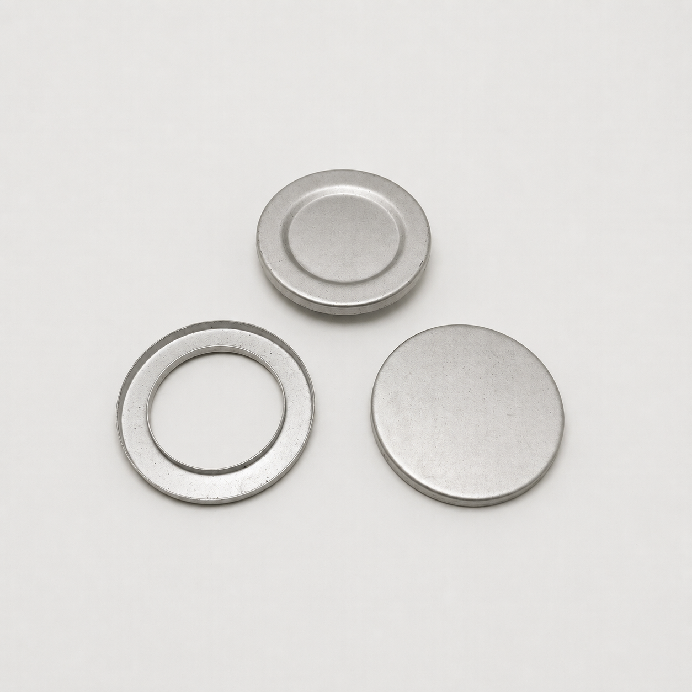
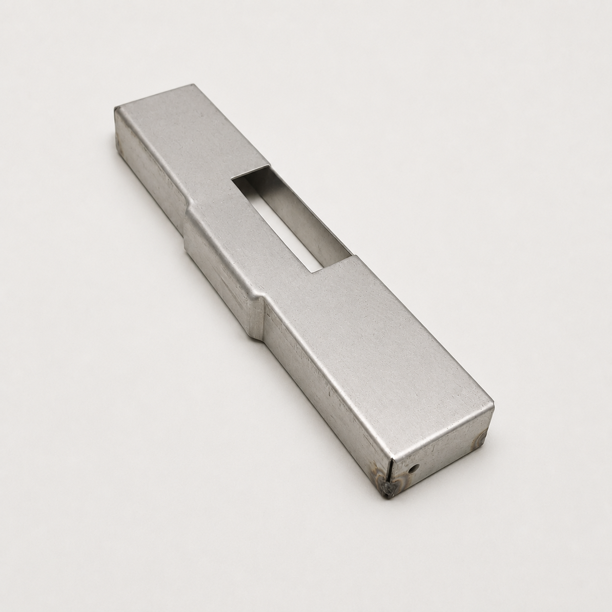
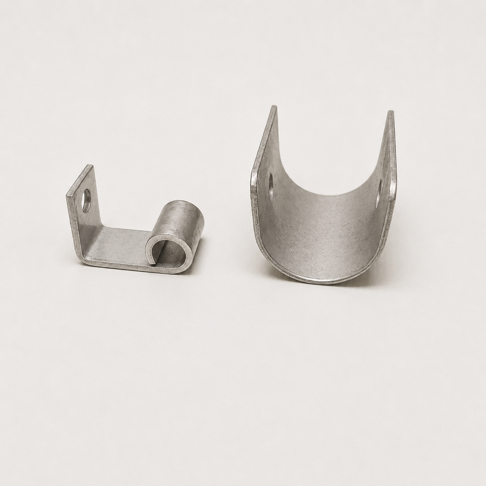

ステンレス加工
耐久性・耐食性が求められる部品や金物を製作。形状や使用環境を踏まえて丁寧に加工します。
Service
素材と用途に合わせた、柔軟な金属加工。
What We Do
図面に基づく製作はもちろん、長年使われてきた製品の現物や既存の金型を確認しながら、同等品の製作方法を検討します。一点物や小ロット、依頼先の閉業により製作が難しくなった部品なども、まずは現物をお持ちください。

耐久性・耐食性が求められる部品や金物を製作。形状や使用環境を踏まえて丁寧に加工します。

用途に適した素材選定から加工まで対応し、各種部材や製品を形にします。

建築現場で必要となる金物や部材を、寸法・仕様に合わせて製作します。

図面が残っていない古い製品でも、現物の寸法や形状、既存の金型を確認しながら製作方法を検討します。
Flow
図面がなければ現物をお持ちください。
形状、金型、素材、数量を確認します。
製作方法と仕様を整理します。
丁寧に製作し納品します。
Contact